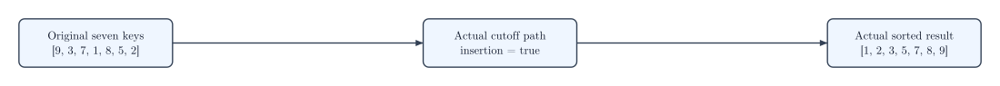
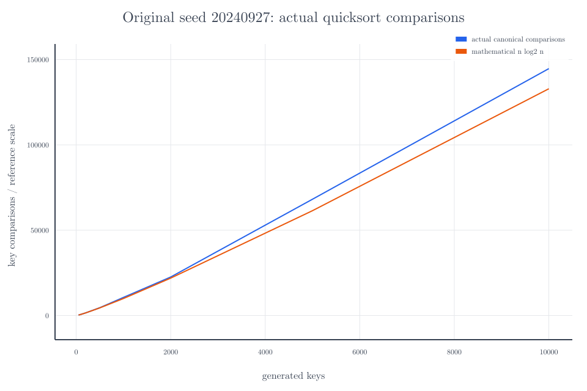
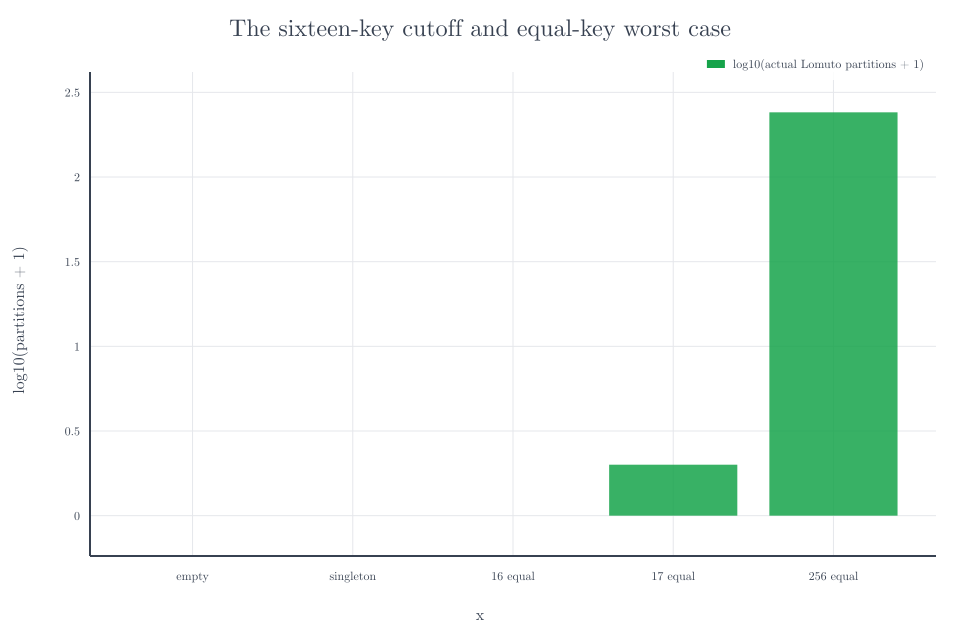
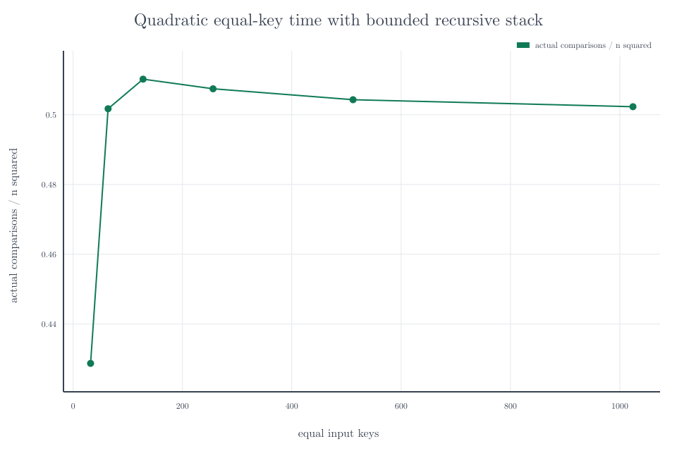

Quicksort: actual cutoff ranges, comparisons and quadratic controls
Abstract
Sorting arranges every key rather than selecting a single rank. The native quicksort chooses median-of-three pivots, partitions strict smaller keys to the left, recurses on the smaller side and finishes ranges of at most16 keys by insertion sort. Its actual histories expose why the original seven-key example never partitions. The original inputs and seeded scaling experiment remain, with an explicit all-equal quadratic control.
Mechanism and mathematical scope
Lomuto partition maintains a scanned prefix smaller than the pivot and a scanned middle region at least as large. Placing the pivot between them establishes its final sorted rank; sorting the two strict index ranges proves correctness inductively. Equal keys remain on one side in this implementation.
Balanced partitions give \(O(n\log n)\), while repeatedly selecting an end rank gives \(O(n^2)\). Median-of-three improves many structured inputs but cannot remove that worst case; all-equal keys still make the strict-less partition maximally unbalanced. Recursing only on the smaller side halves the recursive subproblem size, so the live call stack is \(O(\log n)\) even when time is quadratic. The insertion cutoff changes actual small-input histories and comparison counts.
A tiny actual producing history
The table and native concept diagram read the same producing execution. Every block below is a complete editable C++ program.
#include <dm/dm.hpp>
int main() {
namespace a = dm::algorithms;
namespace g = dm::graphics;
std::filesystem::create_directories("build");
const std::vector<std::int64_t> original{9, 3, 7, 1, 8, 5, 2};
auto t = a::quicksort_trace(original);
const auto &s = t.steps[0];
std::print("\n| actual range | actual insertion cutoff | actual range after | comparisons | partitions " "|\n| --- | --- | --- | ---: | ---: |\n");
for (const auto &e : t.steps)
std::print("| [{},{}) | {} | `{}` | {} | {} |\n", e.lo, e.hi,
e.insertion, e.values, t.comparisons, t.partitions);
g::Diagram d;
d.node("n0", {0, 0}, std::format("Original seven keys\n{}", original));
d.node("n1", {10, 0},
std::format("Actual cutoff path\ninsertion = {}", s.insertion));
d.node("n2", {20, 0}, std::format("Actual sorted result\n{}", t.values));
d.edge("n0", "n1").edge("n1", "n2");
d.save_svg("build/quicksort_tiny.svg");
}| actual range | actual insertion cutoff | actual range after | comparisons | partitions |
|---|---|---|---|---|
| [0,7) | true | [1, 2, 3, 5, 7, 8, 9] | 18 | 0 |

The retained original experiment
#include <dm/dm.hpp>
int main() {
namespace a = dm::algorithms;
namespace g = dm::graphics;
std::filesystem::create_directories("build");
auto seven = a::quicksort_run({9, 3, 7, 1, 8, 5, 2});
std::print("Original seven-key result {}, actual comparisons {}, actual partitions {}.\n",
seven.values, seven.comparisons, seven.partitions);
auto rows =
a::quicksort_scaling({50, 100, 200, 500, 1000, 2000, 5000, 10000});
std::vector<double> x, y, z;
std::print("\n| original n | actual comparisons | mathematical n log2 n | actual/reference |\n| ---: | " "---: | ---: | ---: |\n");
for (const auto &r : rows) {
x.push_back(r.size);
y.push_back(r.comparisons);
z.push_back(r.reference);
std::print("| {} | {} | {} | {} |\n", r.size, r.comparisons,
r.reference, r.comparisons / r.reference);
}
auto p = g::RPlot::create();
p.lines(x, y, "actual canonical comparisons", {37, 99, 235}).lines(
x, z, "mathematical n log2 n", {234, 88, 12}).title(
"Original seed 20240927: actual quicksort comparisons").x_label(
"generated keys").y_label("key comparisons / reference scale");
p.save_svg("build/quicksort_original.svg");
}Original seven-key result [1, 2, 3, 5, 7, 8, 9], actual comparisons 18, actual partitions 0.
| original n | actual comparisons | mathematical n log2 n | actual/reference |
|---|---|---|---|
| 50 | 291 | 282.1928094887362 | 1.0312098331889472 |
| 100 | 663 | 664.3856189774724 | 0.9979144356260977 |
| 200 | 1549 | 1528.7712379549448 | 1.01323203991731 |
| 500 | 4593 | 4482.892142331044 | 1.0245617905077906 |
| 1000 | 10618 | 9965.784284662088 | 1.0654454979867174 |
| 2000 | 22570 | 21931.568569324176 | 1.0291101582022182 |
| 5000 | 68151 | 61438.56189774724 | 1.1092544795144186 |
| 10000 | 144671 | 132877.1237954945 | 1.0887577625675955 |

Explicit controls
#include <dm/dm.hpp>
int main() {
namespace a = dm::algorithms;
namespace g = dm::graphics;
std::filesystem::create_directories("build");
std::vector<std::string> labels{"empty", "singleton", "16 equal",
"17 equal", "256 equal"};
std::vector<std::vector<std::int64_t>> cases{{}, {7},
std::vector<std::int64_t>(
16, 7),
std::vector<std::int64_t>(
17, 7),
std::vector<std::int64_t>(
256, 7)};
std::vector<double> counts;
std::print("\n| actual fixture | comparisons | partitions | live recursion depth |\n| --- | ---: | ---: " "| ---: |\n");
for (std::size_t i = 0; i < cases.size(); ++i) {
auto r = a::quicksort_run(cases[i]);
counts.push_back(std::log10(r.partitions + 1.0));
std::print("| {} | {} | {} | {} |\n", labels[i], r.comparisons,
r.partitions, r.max_depth);
}
auto p =
g::RPlot::barplot(counts, labels, "log10(actual Lomuto partitions + 1)");
p.title("The sixteen-key cutoff and equal-key worst case").y_label(
"log10(partitions + 1)");
p.save_svg("build/quicksort_controls.svg");
}| actual fixture | comparisons | partitions | live recursion depth |
|---|---|---|---|
| empty | 0 | 0 | 0 |
| singleton | 0 | 0 | 0 |
| 16 equal | 15 | 0 | 1 |
| 17 equal | 34 | 1 | 2 |
| 256 equal | 33255 | 240 | 2 |

Actual selected work and sensitivity
#include <dm/dm.hpp>
int main() {
namespace a = dm::algorithms;
namespace g = dm::graphics;
std::filesystem::create_directories("build");
std::vector<double> x, y;
std::print("\n| equal keys n | actual comparisons | actual comparisons / n squared | actual live " "recursion depth |\n| ---: | ---: | ---: | ---: |\n");
for (std::size_t n : {32, 64, 128, 256, 512, 1024}) {
auto r = a::quicksort_run(std::vector<std::int64_t>(n, 7));
x.push_back(n);
y.push_back(double(r.comparisons) / (double(n) * n));
std::print("| {} | {} | {} | {} |\n", n, r.comparisons, y.back(),
r.max_depth);
}
auto p = g::RPlot::create();
p.lines(x, y, "actual comparisons / n squared", {16, 122, 87}).points(
x, y, {16, 122, 87}, 5).title("Quadratic equal-key time with bounded recursive stack").x_label("equal input keys").y_label("actual comparisons / n squared");
p.save_svg("build/quicksort_work.svg");
}| equal keys n | actual comparisons | actual comparisons / n squared | actual live recursion depth |
|---|---|---|---|
| 32 | 439 | 0.4287109375 | 2 |
| 64 | 2055 | 0.501708984375 | 2 |
| 128 | 8359 | 0.51019287109375 | 2 |
| 256 | 33255 | 0.5074310302734375 | 2 |
| 512 | 132199 | 0.5042991638183594 | 2 |
| 1024 | 526695 | 0.5022954940795898 | 2 |

API and interpretation
The old report narrated a separate no-cutoff recursive algorithm on seven keys. That mirror is removed: the canonical producer actually uses insertion sort there. The original seeded array stream and eight scaling sizes remain, and frozen comparisons check the historical counted overload exactly. The mathematical n log2 n curve is labelled as a reference, not measured work. Actual trace entries record completed partitions and cutoff ranges in execution order; the larger branch is iterated rather than recursively called. The sort is unstable. Work caps are selected-event budgets, while ordinary in-place signatures retain uncapped execution.
Reusable producers, fixtures and histories live in the canonical C++ library. Captured records own their values and do not come from a separate report replay. Selected counters and record/scalar policies are specified at their API boundaries; they are not peak-byte or wall-time budgets. Synthetic structural inputs are controlled fixtures for these mechanisms.
References
Verified in the shared ten-document batch: 108 scoped native cases (22 new plus86 existing; one unchanged Rayleigh failure baseline-confirmed and carried to batch314–323);22 directly instrumented ASan/UBSan cases;91 executable public examples;367/367 full-file definitions plus17/17 common-sampler/engine definitions;10 hovers;32478 independent records/106910 checks;frozen compatibility across all ten families;12 checkout/installed standalone headers and linked consumer;40 executed programs and40 inspected figures with both exports. Legacy retirement follows the completed validation gates.